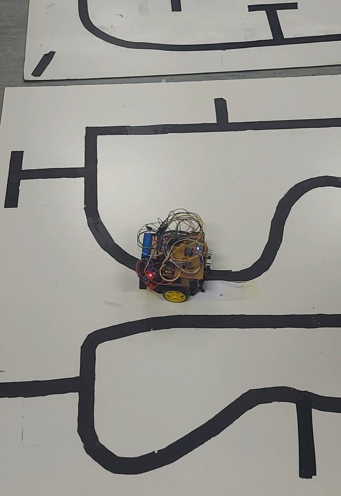

Projects

Mechatronics Design
Line Following and Object Detection Robot
University of Cape Town
The project aimed to develop a robot capable of navigating a maze, detecting objects, measuring their distance from lines, and returning to the closest object near a detect line.
My role involved designing the control system and localization using MATLAB. Responsibilities included:
My role involved designing the control system and localization using MATLAB. Responsibilities included:
- Control System Design: Developing algorithms for accurate line-following.
- Object Detection: Implementing methods to measure object distance from detect lines.
- Localization: Creating a system for tracking the robot’s position and returning to the closest object.
- Integration and Testing: Ensuring the cohesive operation of all components.


Power Systems Design
Smart Power Management System for Remote Camera Trap
University of Cape Town
Designing a power subsystem to ensure continuous operation of a camera trap for monitoring Fork-tailed Drongos in the Kalahari Desert, addressing challenges such as extreme temperatures, dust, and power reliability.
My role involved:
My role involved:
- Power Supply Integration: Incorporating solar panels and rechargeable batteries.
- Voltage Regulation: Ensuring stable and reliable power output.
- Environmental Adaptation: Addressing temperature and dust challenges.
- Power Management: Optimizing energy use for continuous operation.